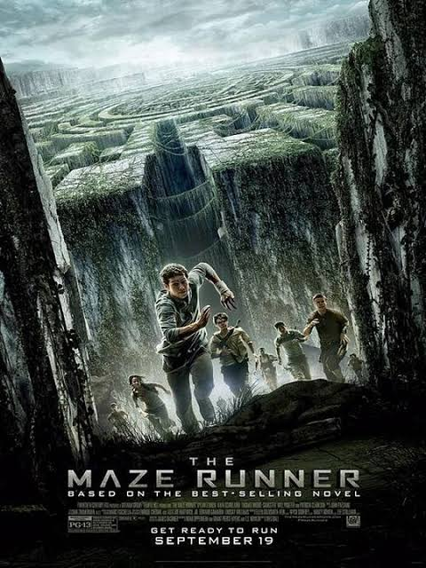
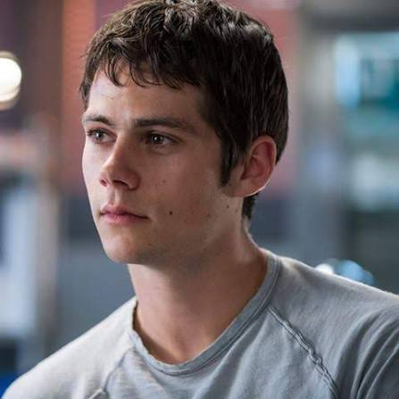
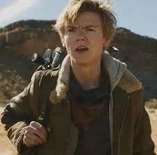
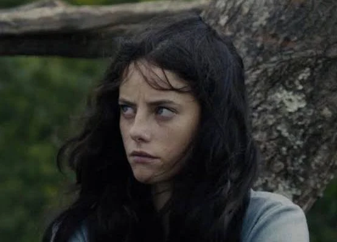
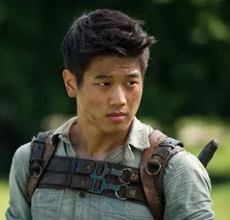

Thomas acorda em um elevador sem se lembrar de nada além de seu próprio nome e descobre que está em um lugar chamado Clareira, um espaço cercado por enormes muros onde vivem outros jovens que também perderam suas memórias. Todos os meses, um novo integrante chega ao local, enquanto os chamados Corredores exploram um enorme labirinto que muda constantemente em busca de uma saída.
Quando Thomas chega, ele começa a questionar as regras da Clareira e percebe que pode haver algo diferente em seu passado. Após a chegada inesperada de uma garota chamada Teresa, que traz uma mensagem misteriosa, os habitantes precisam encontrar respostas e escapar do labirinto antes que o tempo acabe — enfrentando perigos desconhecidos e criaturas mortais conhecidas como Verdugos.


Dylan O'Brien

Thomas Brodie-Sangster

Kaya Scoledario

Ki Hong Lee
Will Poulter